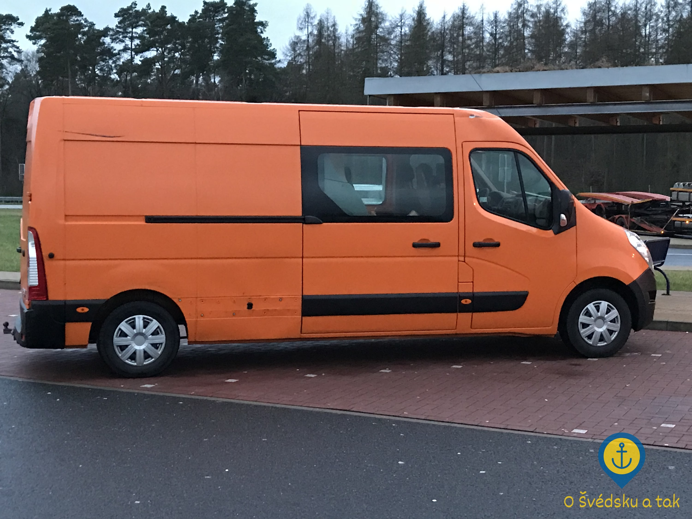
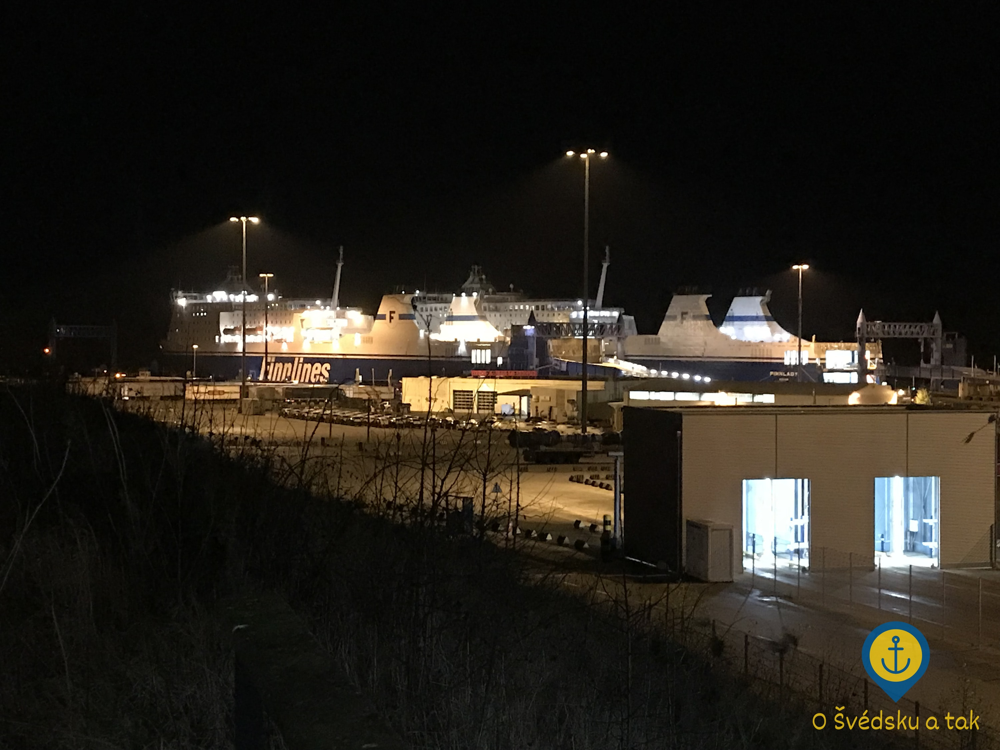
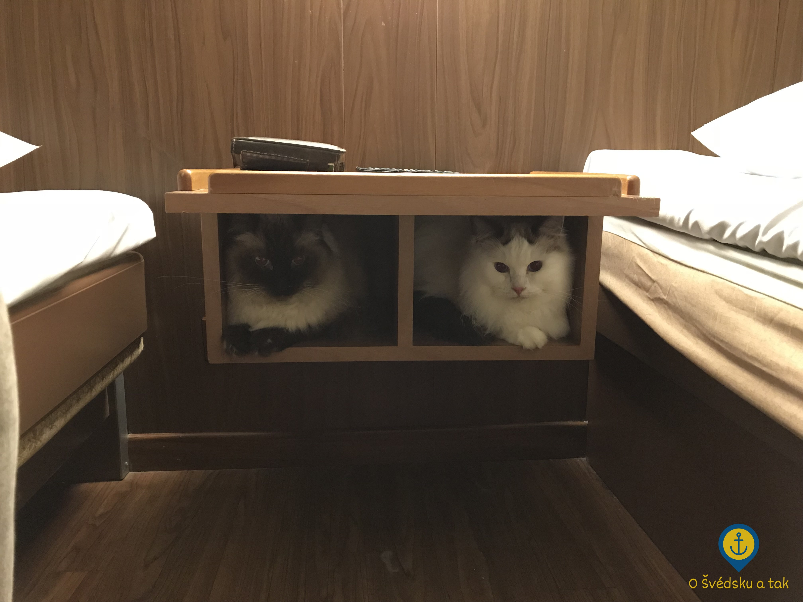
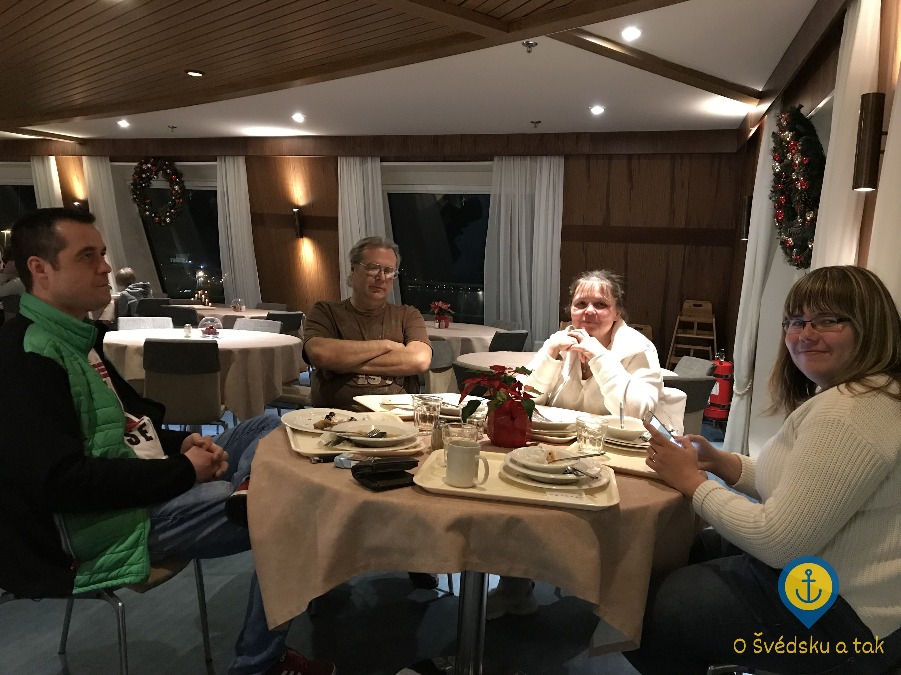
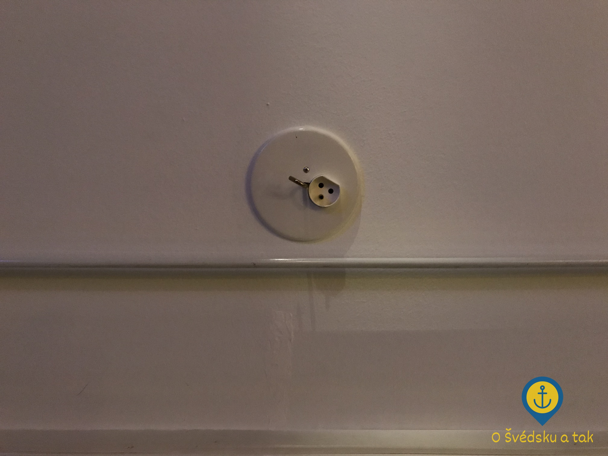

Odjezd a příjezd
Publikováno 13. 1. 2018 (21:17) v kategorii Odjezd z ČR • Autor Knut Holm • Přečtete za 8 minut
Představte si, že se stěhujete přes tisíc kilometrů daleko. Všechno máte naplánované do nejmenších detailů a už z vás pomalu začíná opadat stres spojený s organizováním toho všeho. Zbývá ještě dát auto do servisu na běžnou kontrolu a to poslední, co chcete v tuto chvíli slyšet je, že vaše auto je ve skutečnosti nepojízdný vrak. Jenže přesně toto se nám stalo.
Problém přichází
Zbývaly necelé dva týdny do odjezdu, když nám mechanik zavolal onu úžasnou zprávu: „Vaše auto tlakuje, do Švédska s tím určitě nedojedete. Oprava by stála 30 tisíc, nicméně i tak by se to stejně nezvládlo udělat včas.“ Nějak takhle zněla diagnóza spolu s vysvětlením, že máme v nádrži na chladicí kapalinu olej.
Auto jsme pro jistotu nechali zkontrolovat ještě ve druhém servisu, nicméně jediná přidaná hodnota byla v tom, že jsme se dozvěděli, že jsme si tam ten olej určitě nalili sami. Inu, co se dá dělat. Autem jsme zvesela lítali dál po Praze, ovšem s očima přilepenýma na ručičku teploměru a s vyděšeným výrazem pokaždé, když se před námi objevila kolona. Po pár set kilometrech jsme ovšem usoudili, že pokud s autem něco skutečně je, bylo to s ním celou dobu, co ho máme, a na dovolenou do Francie nás taky dovezlo. Jenže co už, s nově nabytými vědomostmi se nám riskovat nechtělo.
Po prvotním šoku nám nezbylo nic jiného než upustit od pečlivě připravovaného plánu a začít improvizovat - a tím myslím improvizovat opravdu pořádně, protože bylo 19. prosince, což znamenalo v zásadě dvě dost nepříjemné komplikace: zaprvé se blížila doba dovolených, čímž se razantně zkrátil čas, kdy lze něco rozumně řešit a zadruhé všechny letenky, jízdenky a palubní lístky na trajekty byly téměř vyprodané.
V tuto chvíli bylo jasné jedině to, že 30. prosince ráno si máme ve Stockholmu převzít byt a 3. ledna má k večeru dorazit z ČR ještě dodávka s naším nábytkem, kterou přiveze rodina. Stačilo tedy vymyslet, jak tam na smluvený termín dostat mě, partnerku, dva kocoury a nějaké základní věci pro nás čtyři.
Jak z toho ven
Do té doby mě nikdy nenapadlo, kolik existuje způsobů, kterými se dá dostat z Prahy do Stockholmu. Každou vymyšlenou variantu jsme si sepsali a začali zjišťovat, nakolik je reálná a kolik bude stát. Pro pobavení (a inspiraci) sem přikládám několik těch, které si pamatuji:
- Zapůjčení auta z půjčovny. Problematické kvůli vrácení auta, nemáme řidiče na zpáteční cestu, poplatek za jednosměrnou cestu je příliš drahý.
- Cesta letadlem. Odmítáme nechat letět kocoury jako cargo, ověřujeme tedy jen variantu, kdy mohou letět s námi na palubě. Možné pouze u ČSA a SAS, povolené rozměry na přepravku jsou nereálné pro dva veliké ragdollí kocoury, navíc takovou přepravku už nemáme kde sehnat. Neměli bychom až do 3. ledna k dispozici auto na přivezení nábytku z IKEA (byt je nevybavený).
- Zapůjčení auta od rodiny. Jediné auto v rodině, které by takovou cestu zvládlo, by nám mohlo být zapůjčeno pouze spolu s řidičem (z obav o ono auto). Zpáteční letenka pro řidiče je příliš drahá, autem to nestihne, protože 2. ledna musí řídit ještě naši stěhovací dodávku. Problematický je i převoz auta zpět do ČR spolu s dodávkou.
- Odvoz autem do Rostocku resp. do Travemünde, cesta trajektem do Trelleborgu resp. do Malmö, pokračování do Stockholmu vlakem. První varianta je výhodnější, protože bychom mohli využít naše původní lístky na trajekt. V Trelleborgu bychom ale stíhali až ranní vlak, takže bychom tam museli přespat. Druhá varianta je lepší, vlak navazuje na příjezd trajektu, navíc se dá bez přestupů dostat až do Stockholmu. Velmi problematické je ale sehnat na toto datum lístky na trajekt a taky opět není čím zajet do IKEA.
- Já poletím do Stockholmu na původní termín předání bytu, partnerka vezme kocoury spolu se stěhovací dodávkou. Problematické, protože v dodávce je málo místa pro posádku. A zase ta IKEA.
- Zkusíme posunout termín předání bytu na 3. ledna večer, zkusíme sehnat šestimístnou dodávku a pojedeme všichni najednou. Problematické, takových dodávek moc není (potřebujeme nákladový prostor alespoň 9 kubíků), ty co jsou, jsou na požadovaný termín zamluvené.
A vítězem je…
Ověřovali jsme tak nějak všechny varianty najednou, ale neustále jsme naráželi na zásadní problémy, kvůli kterým ta či ona varianta uvázla na mrtvém bodě. S každým dnem se navíc všechny varianty nezanedbatelně zdražovaly.
Osobně si myslím, že jsme ale nakonec měli štěstí v neštěstí. Poté, co jsem smířený s osudem volal už do asi dvacáté půjčovny užitkových vozů, se na mě konečně usmálo štěstí a podařilo se mi objednat sedmimístnou dodávku s nákladovým prostorem 9 kubíků, kterou lze řídit na béčko. Okamžitě jsme dokoupili ještě lístky na trajekt a nechali aktualizovat informace o vozu - nová dodávka totiž poskočila do kategorie minibus s odpovídajícím příplatkem. Předání bytu se podařilo posunout na 3. ledna a bylo vyhráno! Na oslavu padla celá láhev whisky.
 Naše nabouraná dodávka
Dodávka byla lehce bouraná a na pravém boku jí chyběla odrazka, což mohlo představovat problém při případné silniční kontrole, ale to bylo to poslední, co nás v tuto chvíli trápilo. Horší bylo, že náklad včetně posádky mohl vážit jen nějakých 1350 kg.
Původní lístky na trajekt se nám podařilo vrátit, obdrželi jsme zpět 70 % původní ceny, tedy něco málo přes 3000 CZK. Nevím, co mě tehdy při kupování lístků osvítilo, protože jsem poprvé v životě zakoupil dražší variantu lístků, které jsou flexi a jdou tak upravovat a vracet. Jsem hrozně rád, že nevěřím na žádná znamení nebo předtuchy a ani na to, že jsem si tím celé to nepohodlí vlastně způsobil sám, protože bych se z toho v tomto případě nejspíš asi zbláznil.
Na cestě
Žádná další překvapení se už naštěstí nekonala a k údivu všech zúčastněných se nám podařilo za pomoci přátel 2. ledna ráno naházet všechny věci do dodávky a úspěšně vyrazit na cestu. Moc místa v nákladovém prostoru nezbylo, takže věci po dodávce neměly nejmenší šanci lítat.
Vpředu seděli tři řidiči, my jsme jeli vzadu spolu s kocoury. O tom, že vezeme nějaké to kilo navíc svědčil fakt, že dodávka měla podvozek proklatě nízko, na pneumatikách byla znát váha, kterou nesou, a při jízdě jsme se na silnici pořádně klátili ze strany na stranu. Očekávali jsme celní kontroly už na hranicích s Německem, kupodivu jsme ale projeli v pohodě. Při naloďování na trajekt si jen zběžně prohlídli naše a kočičí pasy, vydali nám karty od kajut a mohli jsme dovnitř. Jakmile jsme projeli bez zastavení i celnici v Malmö, dostavil se pocit vítězství z toho, že si naštěstí nikdy neověříme, jestli a případně jak moc jsme překročili onu magickou hranici vozidla do 3,5 tuny.
 Trajekt, kterým jsme jeli do Švédska
Kromě obav z celní kontroly kvůli váze dodávky a ze silniční kontroly kvůli chybějící odrazce byla cesta akorát nudná, monotónní a zdlouhavá. Jestli ji budu ještě někdy absolvovat znovu, tak rozhodně ne v takto neuvěřitelně nepohodlné dodávce, kam už člověk po hodině nevěděl, jak se poskládat, aby mu nezdřevěněly nohy i zadek. Při každé zastávce jsme se po výstupu z auta pohybovali jako partička pořádně jetých zombíků a brečeli jsme, když jsme museli opět nasednout a jet. Doprovod mňoukacího dua naštěstí ustal po zhruba hodině jízdy a kocouři se až překvapivě v pohodě adaptovali na život v autě.
 Odvážní kocouři ve svém bezpečném úkrytu
Cestu trajektem si užil každý po svém - řidiče oslovila především bohatá večeře podávaná formou all you can eat bufetu, kocouři si zalezli do těch nejmenších skříněk, které v kajutě našli a my jsme si chvíli odpočinuli v sauně.
 Žranice na trajektu
V Německu začalo pršet a déšť nás poté s malými přestávkami doprovázel až do Stockholmu. Sníh jsme naštěstí po cestě nepotkali žádný, ale kousek za Norrköpingem se na nás poprvé kolem třetí hodiny odpoledně snesla pověstná Švédská tma, za jejíhož doprovodu jsme úspěšně dorazili až na naši novou adresu.
Välkommen till Stockholm
Když jsme s pocitem úlevy vystoupili z dodávky naposledy, čekala na nás už zástupkyně naší relokační agentury Birgitta. Přivítala nás ve Švédsku a vzala nás do bytu na předávku. Poprvé jsme tak s naprosto němým úžasem začali sledovat, jak jsou tady úplně obyčejné věci řešené úplně jinak, než v ČR, a jak prostě a jednoduše fungují.
Dveře se po přiložení čipu otevírají automaticky, kolárna má přímý přístup zvenčí domu, popelnice na tříděný odpad jsou v samostatné místnosti dole v domě přístupné taktéž zvenčí. Každý byt je opatřen elektronickou cedulkou se jménem svých obyvatel. Sousedi dostali e-mail, že se dnes stěhujeme a že lze tedy očekávat více hluku, odpadu a nadměrně používání výtahu. Dům je nádherně čistý a tichý a stejně tak i jeho okolí, dole na chodbě stojí vánoční stromek a vedle něho stojí vánoční skřítek s ceduličkou přející God jul, tedy veselé Vánoce. Na celém domě i bytě je vidět kvalita a že se jedná o moderní stavbu. Byt je prostorný a snad ještě hezčí než na fotkách.
Při předávání bytu objevujeme další drobná překvapení - lampy se na strop instalují pomocí speciálních zásuvek, systém je velice jednoduchý. Pokud je třeba, aby do bytu vstoupil technik, když budete zrovna v práci, můžete zanechat jedny klíče zavěšené pomocní speciálního mechanismu zevnitř bytu na hlavních dveřích, ke kterému má technik klíč. Do hlavní místnosti v domě lze zavěsit 6 světel, přičemž dvě místa jsou přímo u oken - aby si Švédové zpestřili dlouhé zimní večery, věší do nich lampy, které zároveň poslouží místo závěsů. Tedy, skoro, protože tady se do oken stejně nikdo nedívá a závěsy ani žaluzie tak nejsou potřeba (pro nás to byl veliký nezvyk, ale po týdnu nám to už vůbec nevadí). Závěsy naopak Švédové instalují do svých obydlí na léto, kdy je kvůli bílým nocím třeba zatmít alespoň ložnici.
 Stropní zásuvka na světlo
Mimochodem, svůj vypínač má nejen zvlášť každé světlo, ale i každá zásuvka. Zásuvkové vypínače však bohužel nejsou umístěny v okolí zásuvek, ale všechny pěkně pohromadě - stále se nám občas stane, že místo toho, ať zhasneme světlo, zhasneme třeba televizi nebo nějaký jiný spotřebič. No a když jedete na dovolenou, přepnete hlavní vypínač do polohy nejsem doma, čímž zajistíte šetření energií - poběží vám jenom lednička a další nezbytné spotřebiče.
Jakmile byla předávka bytu hotová, domluvili jsme se s Birgittou, kdy zajdeme na úřady, rozloučili jsme se a dali se do vykládání dodávky. Kupodivu bylo poměrně rychle hotovo a zbyl nám tak čas zajet do IKEA pro nějaký ten nábytek. Všichni už jsme byli hrozně unavení, ale nakonec se nám vítězoslavně podařilo sestavit alespoň postel, takže jsme se mohli konečně alespoň trochu prospat - po dvou skoro probdělých nocích doprovázených neustálým mňoukáním nás ale, bohužel, čekala jen třetí noc tohoto ražení. I tak to ale po tom všem byla neuvěřitelně sladká první noc ve Stockholmu.
Jo a - nebojte, s dodávkou to dopadlo dobře. Zpáteční cesta se obešla taktéž bez kontrol či jiných komplikací a kdo ví, kde je nyní dodávce konec. Naši řidiči ji každopádně zcela v pořádku dopravili zpět do pražské půjčovny.